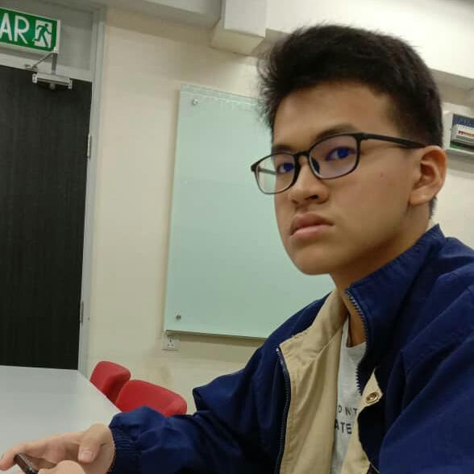
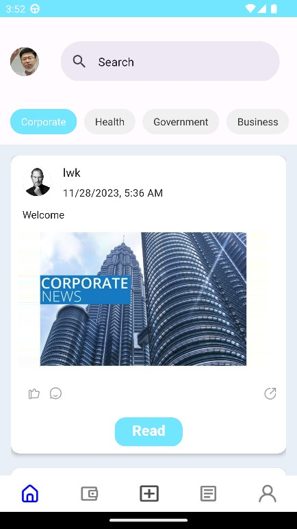

Hi, I'm Wan Zhen Yao
Results-driven Business Analyst and Computer Science graduate bridging technical teams and business stakeholders — through process automation, SDLC management, and full-stack development.
About Me
I'm a results-driven Business Analyst and Computer Science graduate with a strong foundation in data science and full-stack development. I bridge the gap between technical teams and business stakeholders to drive digital transformation.
My expertise spans process automation, SDLC management, and requirements engineering — optimizing workflows and delivering impactful, user-centric software solutions from gap analysis through to final deployment.
Alongside business analysis, I still build hands-on: full-stack mobile apps with React Native and Node.js, and custom websites with WordPress, HTML, and CSS.
Beyond the Code
Swimming
Regular laps to clear my head and stay active outside of screen time.
Gaming
Unwinding with story-driven and strategy games, and occasionally tinkering with game mods.
Trading Card Games
Collecting and playing TCGs — building decks and following the competitive meta.
Anime
Watching anime across genres, always on the lookout for the next great series to binge.
Featured Work
E-Commerce Dashboard
An admin dashboard for tracking orders, inventory, and revenue in real time. Focused on data clarity and fast filtering.

Social Media App
A full-stack mobile social media platform (CJOP) built with React Native and Node.js, featuring live streaming and OTP-secured accounts.
Portfolio CMS Platform
A lightweight CMS letting creatives publish case studies without touching code. Handles image pipelines and drafts.
Social Media App
Designed and developed a full-stack mobile social media platform, Citizen's Journalist Online Platform (CJOP), in collaboration with SME Malaysia Media Group. Built using React Native for the frontend and Node.js for backend development, the application provides a modern, responsive, and native-like Android experience while supporting scalable RESTful API services.
The platform utilizes Supabase for database management, authentication, and real-time data synchronization. To enhance user engagement, ZEGOCLOUD was integrated to provide high-quality live streaming capabilities, allowing citizen journalists to broadcast live events directly to the community. User authentication was strengthened through Twilio SMS OTP verification, ensuring secure account registration and login.
The project focused on improving the client's original prototype by redesigning the user interface, enhancing user experience, optimizing application performance, reducing system errors, and implementing smoother navigation throughout the application. Additional client-requested features, including premium live event broadcasting and secure user verification, were successfully delivered, demonstrating strong capabilities in full-stack mobile development, cloud services, third-party API integration, and collaborative software engineering.